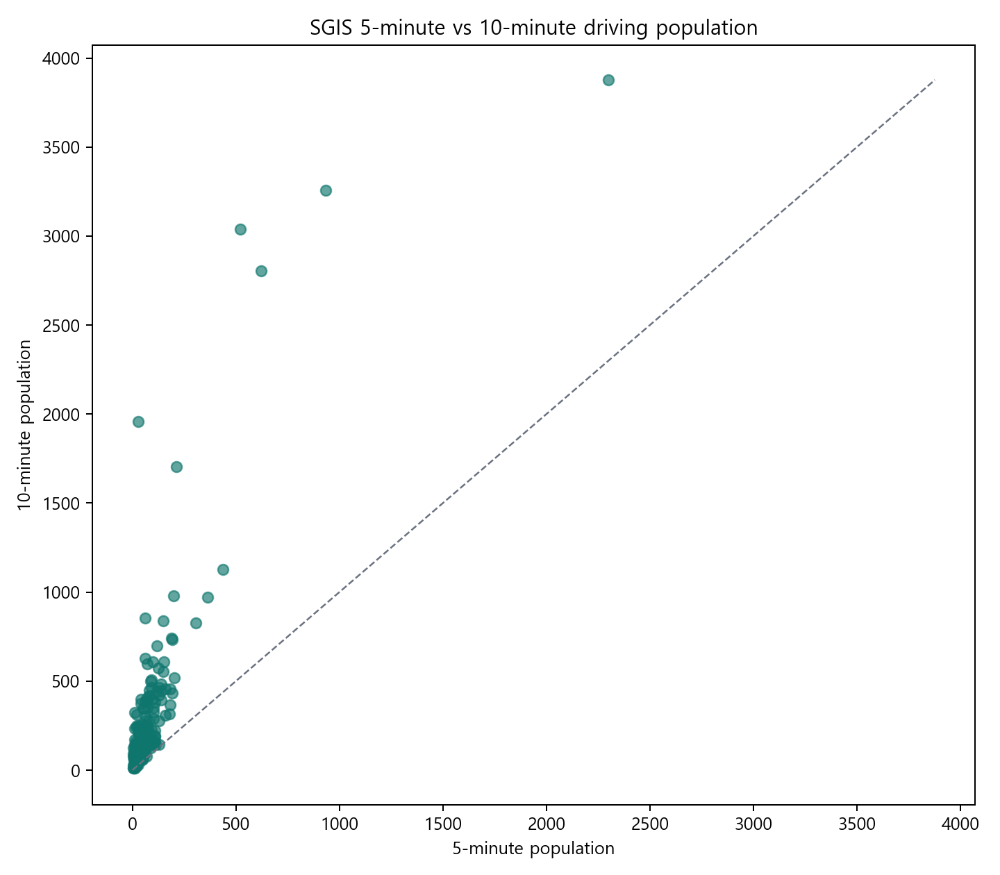
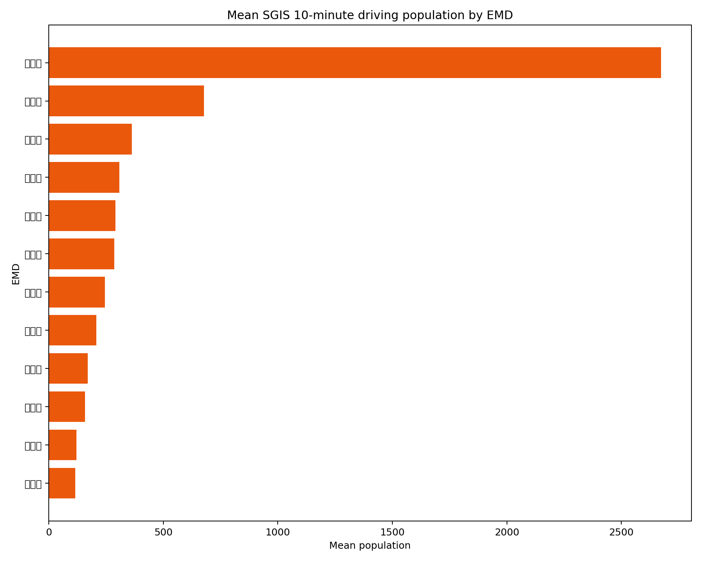

SGIS 생활권 인구 · 2024년
5분·10분 주행생활권 서비스 응답. 중복·대표·인근좌표 47개를 비교에서 제외했습니다. 권역이 겹치므로 시설별 인구를 합산하지 않습니다.
분석 요약 JSON ↗ · 시설별 분석 CSV ↗SGIS 출처 목록 ↗
전통수리시설 × SGIS 주행생활권 × 지역 공간환경
2025년 의성 청년연구에서 구축한 못 데이터를 바탕으로,
시설별 주변 환경과 5분·10분 주행생활권 인구를 함께 탐색합니다.
지도에서 못을 선택하고, SGIS 인구 비교와 정책 검토 근거를 확인하세요.
SGIS 인구 기준: 2024년 · 저장된 서비스 응답을 표시합니다.
미확보값은 0명이 아니며, 생활권 인구는 실제 이용자 수가 아닙니다.
기존 공간분석에 SGIS 생활권 인구와 정책 검토 근거를 연결했습니다
2025년 의성 청년연구자로 수행했던 전통수리시설 '못' 연구를 기반으로 기존 GIS 데이터를 Python으로 분석하고 Leaflet 기반 Web GIS로 재구성한 지역자원 분석 프로젝트입니다.
이 프로젝트에서 저는 수자원·GIS 도메인 경험을 데이터 전처리, 공간분석, 인터랙티브 지도와 연결해 실제 사용자가 탐색할 수 있는 웹 결과물로 확장했습니다.
의성에는 오래전부터 농업용수를 확보하고
공동으로 이용해 온 의성만의 고유한 전통 농업수리시설인 '못'이 존재했습니다.
의성의 농업환경과 공동체의 물 관리 방식이 담긴 이 시설들은 단순한 문화유산이 아니라,
지역의 농업 시스템과 수자원 관리의
핵심 인프라로 기능해왔습니다.
이 전통수리시설을
"공간 데이터로 분석할 수 있는 지역자산"
으로 바라보았습니다.
못의 위치, 규모, 용량, 관리주체 등을
데이터로 정리하고
GIS를 이용하여 공간적으로 표현했습니다.
의성군 청년연구자 활동 시작
의성의 전통 농업유산 및 못에 관한 기존 자료 검토
원자료를 확인하고 의성군 행정경계 안의 못 위치정보를 선별
원본 좌표계(EPSG:5174) → 국제표준(WGS84) 변환
QGIS를 활용한 공간데이터 구축 및 분석
지역 농업 및 농업유산 관련 공개 데이터 수집
못의 공간적 분포, 지역별 특성, 군집성 분석
GIS 분석 결과 및 시각화 자료 정리
청년정책 및 지역활동 관련 제안 수립
의성군 주소 기반
못/저수지 위치
중복 제거
이상값 처리
EPSG:5174
→ WGS84
GeoJSON
형태 변환
QGIS / Python
공간 통계
원자료의 속성 필드
웹 지도를 위한 좌표 변환
의성군 분석 범위에 맞는 데이터 선별
Leaflet 지도와 Popup에 연결
* 지도와 추가 분석에는 의성군 행정경계 안에서 확인된 427개 시설을 사용합니다.
기존 연구에서 구축한 GIS 자료를 검증·변환하고
실제 Leaflet 지도에서 탐색 가능한 결과물로 연결했습니다.
의성군 행정경계의 실제 bounds를 계산해 처음부터 의성군 전체가 보이도록 맞추고, 경계 밖 시설은 표시하지 않았습니다. 레이어 ON/OFF, 용량 필터, 시설 Popup을 통해 분석 결과를 직접 확인할 수 있습니다.
도메인 자료를 정리하는 데서 끝내지 않고, 데이터 처리 과정과 결과를 웹에서 확인할 수 있도록 구현했습니다.
주소 기반 자료의 좌표계를 확인하고
의성군 경계 내부 데이터만 선별했습니다.
pandas와 GeoPandas로 지역 집계,
Buffer·Intersection·상관분석을 수행했습니다.
GeoJSON을 Leaflet으로 연결해
지도·레이어·필터·Popup을 구현했습니다.
QGIS와 Python으로 정리한 공간데이터를
Leaflet 지도에서 직접 탐색할 수 있도록 재구성했습니다.
분석 자료를 불러오는 중입니다.
각 조건은 동시에 적용되며 지도에는 교집합만 표시됩니다.
각 분석은 문제 → 데이터 → 전처리 → 분석 → 핵심 결과의 흐름으로 정리했습니다.
화면에는 대표 결과를 우선 보여주며, 차트와 지도에 마우스를 가까이 대면 세부정보를 확인할 수 있습니다.
저수량을 가중치로 사용해 중심점을 계산하고, 용량 상위 시설의 위치가 전체 시설 분포와 어떻게 다른지 비교합니다.
용량을 가중치로 계산한 중심과 단순 중심을 비교해 시설 규모가 공간 분포에 미치는 영향을 확인했습니다. 극단값의 영향은 대표 상위 시설과 함께 해석합니다.
pandas 집계 후 GeoPandas spatial join으로 시설을 읍면 Polygon에 연결했습니다. 관리주체 분포와 토지 면적당 시설 밀도를 대표 지표로 시각화하고, 읍면 경계와 결과를 Leaflet에서 함께 확인합니다.
읍면 면적을 기준으로 표준화한 시설 밀도입니다. 순위와 실제 값을 함께 보여주어 단순 시설 수와 구분했습니다.
관리주체 비교는 별도 관리대장 XLSX 원자료 696건을 기준으로 집계했습니다.
그래프에 마우스를 가까이 대면 세부 집계값을 확인할 수 있습니다. 읍면별 공간 분포는 지도에서 읍면별 시설 밀도 레이어를 ON/OFF하여 확인합니다.
시설 수 비중은 공간 밀도와 분리해 읽도록 구성해, 시설의 분포와 관리 책임의 구조를 함께 비교할 수 있습니다.
약한 상관계수를 강한 결론으로 포장하기보다, 실제 GIS 데이터를 어떻게 공간분석으로 변환했는지를 핵심 결과로 제시합니다.
GeoPandas로 의성군 경계와 겹치는 농경지 Polygon을 제한하고, 시설별 Buffer와 Intersection 면적을 계산했습니다. 결과는 지도 레이어와 Popup으로 확인합니다.
산점도는 극단값의 영향을 줄이기 위해 로그축으로 표시하며, 각 점에 마우스를 올리면 시설명·지역·용량·주변 농업지역 면적을 확인할 수 있습니다.
시설 간 최근린거리와 공간적 군집성을 검토했으나 강한 군집 패턴은 확인되지 않아 보조 분석으로 정리했습니다.
SGIS 2024년 생활권역 서비스의 저장 응답으로 5분·10분 인구를 비교합니다. 전체 427개 중 좌표 품질 조건을 통과한 380개를 분석하며, 5분 175개·10분 190개에서 인구값을 확보했습니다.
SGIS 생활권역 통계 API(serviceAreaGeometry, serviceAreaStatistics)를 연동하여 서비스가 생성한 주행시간 권역의 인구값을 수집했습니다. 실제 현장 이동시간을 측정한 결과는 아닙니다.
348명 ~ 최대 3,877명 도달 (중위수 153명)
+282.5명 ~ 최대 +2,517명 확장 (중위수 118명)
근거리 및 광역 확장 수요가 모두 뛰어난 핵심 후보군
점의 위치가 대각선보다 위에 있을수록 5분에서 10분으로 생활권 확장 시 인구가 급증함을 의미합니다.
427개 못을 중복·누락 없이 체계화하기 위해 6단계 순차 필터링 알고리즘을 적용했습니다. 모든 시설은 명확한 단 하나의 정책 검토 맥락에만 배정됩니다.
| 정책 검토 맥락 | 못 수 (개) | 점유율 (%) | 주요 판정 근거 | 정책적 활용 제안 |
|---|---|---|---|---|
| 접근·도달 검토 | 20 | 4.7% | SGIS 10분 도달인구 또는 5→10분 증가폭 상위 25% | 접근성 기반 체험·관광·체류형 지역자원화 및 탐방로 연계 |
| 청년참여 검토 | 43 | 10.1% | 청년 인구 맥락 및 SGIS 생활권 인구 정상 응답 | 청년 참여형 아카이빙, 로컬 콘텐츠 제작, 농업유산 보존단 운영 |
| 공동체 지원 검토 | 53 | 12.4% | 고령 인구 맥락 및 1km 내 생활편의시설 부족 | 주민 쉼터, 생활지원 인프라, 공동체 돌봄 공간으로 재정비 |
| 현장 확인 필요 | 47 | 11.0% | 좌표 품질 기준 미충족 (대표점·중복좌표) | 정밀 좌표 보정, 지적도 대조 및 현장 실사 후 정책 결정 |
| SGIS 10분 인구 미확보 | 190 | 44.5% | 10분 주행 생활권 인구 미응답 (경로망 인식 실패 등) | SGIS 네트워크 재요청 및 통계 보완 우선 관리 |
| 맥락 참고 | 74 | 17.3% | 기초 공간·인구 맥락만 확인된 시설 | 추가적인 시설 상태 및 관리주체 조사 후 후속 검토 |
국토교통부 VWorld 도로망(UQ151)과의 물리적 최근접 거리 및 행정안전부 18개 읍·면 주민등록 인구구조(청년 vs 고령)를 결합하여 입체적으로 해석했습니다.
서로 다른 공간 단위의 지표를 구분해 읽고, 미확보 자료와 좌표 품질 문제를 함께 확인합니다.
5분·10분 주행생활권 서비스 응답. 중복·대표·인근좌표 47개를 비교에서 제외했습니다. 권역이 겹치므로 시설별 인구를 합산하지 않습니다.
분석 요약 JSON ↗ · 시설별 분석 CSV ↗UQ151 도로 최근접거리는 미터 단위의 유클리드거리입니다. UQ164·UO601 시설 68개는 확보한 레이어의 범위이며, 모든 생활시설을 포괄하지 않습니다.
레이어·기준연도·출처 목록 ↗2024·2025년 12월 주민등록 인구. 18개 읍·면의 지역 배경지표이며 못 주변 인구격자 분석과 구분합니다. 청년 만 19~39세, 고령 만 65세 이상.
읍·면 인구 요약 ↗ · 출처 목록 ↗규칙과 사분위 기준으로 6개 검토 맥락을 표시합니다. 사업 우선순위 점수나 정책효과를 검증한 결과는 아니며 실제 이용·관리 상태의 확인이 필요합니다.
427개 시설의 검토 근거표 ↗

국내 공식 인구격자에 의한 500m·1km 인구는 DATA_NOT_AVAILABLE입니다.
공개 화면은 Uiseong-Young-Researchers의 연구·화면 구조를 바탕으로 확장했습니다.